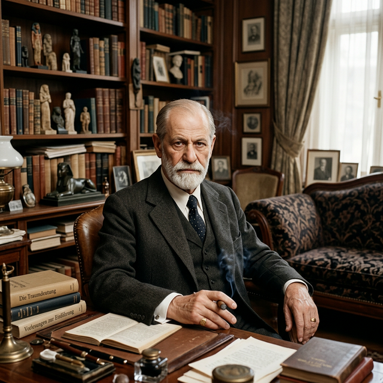

1856 - 1939
Sigmund Freud:
El Padre del Psicoanálisis
Nacido el 6 de mayo de 1856 en Freiberg (Moravia), Sigmund Freud se trasladó con su familia a Viena a los cuatro años. Su brillante carrera académica lo llevó a graduarse como médico en 1881, centrando inicialmente su interés en la neurología y el sistema nervioso.
El Camino al Inconsciente
Tras especializarse en neuropatología, Freud comenzó a interesarse por la psicología clínica al observar que muchos trastornos físicos no tenían una base orgánica identificable. Junto a Joseph Breuer, investigó el caso de Anna O., donde comenzó a vislumbrar el poder de la palabra y el recuerdo traumático.
Un Cambio de Paradigma
Su legado más importante fue el descubrimiento de procesos mentales de los que no somos conscientes, pero que determinan nuestra conducta. Introdujo el modelo del aparato psíquico dividido en Ello, Yo y Superyó, y estableció la Asociación Libre como la herramienta fundamental para acceder a los contenidos reprimidos.
Su Técnica: La Asociación Libre
A diferencia de la hipnosis, donde el terapeuta impone su voluntad, la asociación libre permite al paciente hablar sin filtros ni censura. Freud creía que en ese flujo de pensamiento se esconden las raíces de los conflictos internos y los deseos reprimidos que buscan una vía de escape.